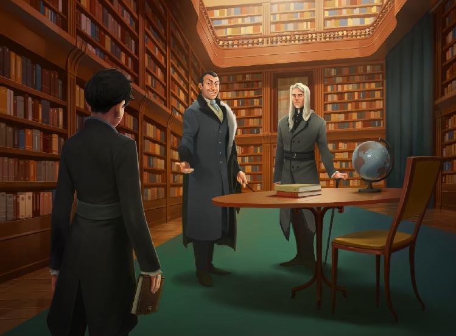

Chapter 3

Malfoy’s Garden Party
The Malfoy gardens were even more breathtaking than Rigel remembered them. Even Sirius, who had grown up amidst the splendor and decadence of pureblood high society, was moved to whistling as they descended the white stone patio to deposit their packages on the gift table. Sirius’ was wrapped in beautiful silver, while Rigel had gone for the more understated green. She didn’t know what Sirius’ gift was, since he was being remarkably restrained in bragging about it, which meant it was probably some kind of prank. She just hoped it didn’t embarrass Draco.
It was quite warm that Saturday, but a summer breeze swept through the yard with such consistency that it must have been spell-induced, and there seemed to be no shortage of iced beverages being passed around by beautiful serving girls. Rigel eyed one of them, noticed the way her fern-green eyes sparkled with an inhuman shine, and guessed they were nymphs, hired for the occasion.
Sirius caught her speculative glance, and nudged her, grinning, “Bit out of your league, Arch, unless you’ve got veela in you somewhere.”
“Is that an impossibility?” Rigel let one of her eyebrows raise, “Don’t tell me there was a pot our ancestors didn’t dip their hands into—genetically speaking.”
Sirius laughed lowly, “No telling. Still, no nymphs until you’re sixteen, eh? They’ll chew a boy up and spit him out a man.”
Rigel fought a grimace, “I’m not sure Nymph Regurgitation is how I imagined that particular transition occurring.”
Sirius nodded sagely, “I did figure you more for a were-cat type of guy.”
“I was thinking valkyrie,” Rigel said dryly.
Her uncle winced dramatically, “You’re a better man than I, then.”
“Surely that was never up for debate,” another voice broke in.
Regulus Black stood there, looking as though something utterly mad was unfolding before him.
Sirius summoned up a grin, “Reggie! How nice to… well, you’re here.”
Regulus ignored his older brother’s antics, “What are you doing here, Sirius? This is a private event.”
“Haven’t you heard?” Sirius said innocently, clearly enjoying himself, “I’m Neutral now. I can go to all sorts of private events if I want. I may even come to your birthday party this year.”
“I haven’t had a birthday party since I came of age,” Regulus said absently, still eyeing Sirius suspiciously.
“That explains so much,” Sirius said sadly, “I’ll invite you to mine next year, how’s that? It’ll be space-themed, just like when we were kids.”
Regulus didn’t seem to relish the reminder of his childhood, for he sent Sirius a long-suffering expression and said, “Are you really Neutral? Now there’s no getting away from you, I suppose.”
Sirius smiled almost fondly, “Admit it, you missed me.”
“Like a toothache,” Regulus drawled.
Rigel didn’t think Regulus’ heart was really in his show of disdain. Maybe the many years apart had thinned whatever bad blood ran between the two brothers, or maybe the Black family had always been somewhat… dysfunctional.
“Your Heir is looking well turned-out, at least,” Regulus said, skimming Rigel’s (well, Archie’s) robes with a discriminating eye. The robes she wore were high-collared, with tapered sleeves. She thought they made her look more elongated than gangly, disguising her awkward elbows and knees with longer, more forgiving lines. Then again, what did she know about fashion? Perhaps she simply looked like a proper Heir was meant to, prudish and stifled.
“You look well also, Uncle,” Rigel said, smiling politely, “Have you been here long?”
“I haven’t made my rounds yet, if that’s what you’re angling,” Regulus said, raising an eyebrow.
“My son doesn’t angle,” Sirius said stoutly, placing a hand on Rigel’s shoulder, “If he wants to ask you something, he’ll just ask it.”
“I certainly hope that isn’t the case,” Regulus sighed, “Sirius, just because you’ve managed to live with your head in the sand doesn’t mean your Heir won’t need to learn politics eventually. You must begin preparing him now, or the family name will suffer for it later when he makes a fool out of himself.”
Sirius’ face flushed with anger, and Rigel hastily cut into the conversation, “Dad’s already taught me all I need to know, Uncle. Please, don’t trouble yourself worrying over our good name.”
“He has, has he?” Regulus positively smirked, “Let’s just see about that.”
Before either Sirius or Rigel could protest, Regulus cast a proprietary hand around Rigel’s shoulder and pulled her away from Sirius’ grasp. Sirius had no choice but to follow swiftly as Regulus steered her toward a nearby group of adults making polite conversation.
At their approach, conversation paused for a moment, and the small circle of people, five at the most, parted politely to accommodate them. Most of them were quite venerable, looking to be at least a generation older than Sirius and Regulus, but that didn’t stop one of the old witches from tittering girlishly when Sirius bowed gallantly over her hand.
“Abigail, it’s been too long,” Sirius said, grinning rakishly at the tiny crone.
She flapped a gloved hand at Sirius, patting at her white-grey hair with the other, “Who let a rascal like you into a well-to-do place like this?”
Sirius laughed appreciatively, waggling his brows, “You’ve got me, madam—I snuck in.”
The old woman laughed gaily, “Not even you would be so audacious as to gate crash a Malfoy party.”
“Anything to see your lovely face, Abigail,” Sirius insisted.
The others in the group were chuckling softly now, and Rigel could only admire how good Sirius was at this. He acted out his own reputation as well as any of the players she’d met in the Rogue could have.
“And Regulus!” the woman, Abigail, clasped Regulus’ hands between her own, “What a pleasant surprise—a rare treat to see you at one of these summer gatherings, isn’t it?”
Regulus inclined his head in a way that was both charming and self-deprecating, “Precisely why I accepted this year. It never does to become predictable, Madam Burke.”
As Madam Burke rewarded Regulus’ ironic wit with another small titter, Rigel wondered if suaveness ran in the Black family, and hoped she could keep up. Then those sharp old eyes turned on Rigel, and she fought to keep from gulping. This lady was intimidating, never mind that she could be Rigel’s great-grandmother.
“And who’ve we here, eh?” she peered at Rigel from approximately eye-level, though Rigel was a tad bit taller, “This wouldn’t be your Heir, Sirius?”
“Sharp as ever, Abigail,” Sirius said, smiling proudly, “This is my son, Arcturus Rigel Black. Rigel, may I present Madam Abigail Burke?”
Rigel stepped forward to bow deeply over her gloved appendage, and when she rose, said, “It’s a pleasure to meet a lady who has so enchanted my father and uncle. Any relation to one Horace Burke, Madam?”
Madam Burke blinked bright eyes at Rigel, and smiled warmly, “My nephew, in fact. Have you made his acquaintance, Mr. Black?”
“Just Rigel, please,” Rigel said with a coaxing smile, “Being on such distant terms with a lady of your charms would wound me to the quick. I have not had the pleasure of meeting Mr. Burke, myself, but I hear excellent things about his owl-order business, particularly the potions side of it.”
Madam Burke sighed exasperatedly, “He’ll be glad to have it known as such, but when is he going to settle down and give me some grandnieces? Daughters, that’s what a man like Horace needs, not rushing after that business of his day in and day out.”
“You think everyone needs daughters, Abby,” another woman in the circle said, “Some of us do find fulfillment in our work, you know.”
“Yes, yes, Suzie,” Madam Burke said, “But you can’t deny that having daughters helps.”
“Perhaps that’s where I’ve gone wrong,” Sirius said, gazing at Rigel speculatively.
Playing her part, Rigel affected an expression of veiled hurt, “I told you I would take that gender-changing potion if you really wanted me to, Dad.”
She thought she heard a muffled choke from Regulus, but couldn’t be sure as the others in their little circle had all burst into startled laughter just then. Sirius positively beamed at her, which Rigel took to mean she was doing well in passing off as Archie.
After a few minutes more of meaningless chatter, they politely excused themselves and Sirius turned to Regulus with a triumphant grin, “How about those apples, brother mine?”
Regulus merely shrugged delicately, “He can charm a few old biddies, I’ll give you that—but what about serious politics?”
Sirius scowled, “Enough of these games, Regulus, my son is not a trick pony.”
“Are you saying you think I don’t have any other tricks, Dad?” Rigel smiled cheekily, “I think I’m offended.”
“Your Heir isn’t complaining,” Regulus said silkily, reminding Rigel of Master Snape for a moment, “Don’t be so uptight, Sirius.”
Sirius winced, but could say nothing to that without breaking character entirely, and so conceded that round to his brother, saying, “Lead on, then. Perhaps when you see my son’s social competence for yourself, you’ll be satisfied that I’ve not run our House into ruin quite yet.”
That was about what Rigel had been thinking, actually. Regulus obviously wanted to prove something, so why not let him try and prove it? She knew she could act as long as she needed to—she did it all day every day anyway, just in different ways. Once he had what he was looking for, he would leave them to enjoy the party, and she could find her friends.
The next group of people Regulus led them to was a little more mixed—Rigel recognized Mr. and Mrs. Parkinson right away, though Pansy was not with them. There was also an elderly wizard who looked vaguely familiar, standing next to an equally elderly witch who smiled with reserved friendliness at Rigel as they approached. She started wracking her brain to recall if she’d met either of them before—and whether it was as Rigel or Harry—but still hadn’t placed them when Sirius gestured her forward to be introduced.
“Some of you already know my Heir, Rigel,” Sirius said, nodding at the Parkinsons in acknowledgment of their daughter’s friendship with Rigel.
“It has been too long, Rigel,” Rose Parkinson said, leaning in to embrace Rigel’s shoulders lightly. It was the greeting one might give a close friend, and Rigel was honoured to be considered so well by her best friend’s mother. “My, how you’ve grown!”
“The better to admire your beauty, my lady,” Rigel said easily, “Your eyes are surely most beautiful when viewed from an equal level.”
“Then I trust you’ll take care not to grow any taller,” Rose said conspiratorially.
“I will certainly put effort toward such an endeavour,” Rigel assured her solemnly, “And how does the summer air find you, Mr. Parkinson?”
Mr. Parkinson seemed to consider the question carefully before responding, with a tilt of his head that caused his glasses to catch the sunlight, “Quite invigorated, thank you, Rigel.” Rigel tried not to blink at the use of her first name, reminding herself that it was to be expected, with her “father” and “uncle” there to make “Mr. Black” rather confusing. “Pansy will be glad to see you here—she always entertains the idea that you’ll disappear over the summer and never be heard from again, for some reason.”
Rigel tried to hide her unease at that ominous statement, “I can’t imagine why. I would never miss Draco’s birthday party, after all. I will reassure her of my continued existence when I see her, however.”
“You pay commendable attention to your friendships, Young Mr. Black,” the familiar-looking witch said approvingly, “I knew we had the right impression of you last summer.”
Rigel suddenly placed her—it was Griselda Marchbanks, who she had indeed met last year at the Malfoys’ party. That meant the wizard next to her was Tiberius Ogden, the man who had almost ingested Nimue-laced nightshade. She had a fleeting hope that they wouldn’t mention the incident, but—
“Dreadful circumstances, of course,” Ogden said, looking a bit pale at the memory, “But you certainly did make an impression.”
“Elder Marchbanks, Elder Ogden,” Rigel bowed to them, “You are too kind to me, as always. I’m surprised you still remember such a little thing.”
She could feel Sirius’ gaze burning the side of her head, but she assumed a mildly sheepish expression and pretended ignorance to his curiosity.
“Little thing indeed!” Ogden said, huffing, “Never met a more modest Heir, Lord Black. You’ve certainly done well by him.”
Sirius accepted the compliment gracefully, if a tad uncertainly. She was certain Archie had never told Sirius about the poison attempt, though Rigel thought she had confided the circumstances to Archie at some point, just in case it ever came up.
“There are many of us with cause to be proud,” Marchbanks nodded imperiously, “This next generation is turning out quite handsomely.”
“We know whom to thank,” Rigel said, glancing up at Sirius warmly. She could see the way the others in the circle softened at the obvious affection between father and son, and even Regulus, who Rigel suspected recognized the ploy easily, looked approving when Rigel glanced at him.
When that group broke up a little later, Sirius silently raised an eyebrow in Regulus’ direction.
Regulus looked down at Rigel, his delicate face impassive, “He isn’t a total loss, at least.”
Rigel gave Regulus her best fake-smile, and was rewarded when his right eyelid twitched slightly in annoyance. She let her smile melt into a more natural smirk, and said, “Never doubt a Black, Uncle.”
“Couldn’t have said it better myself!” Sirius crowed, clasping her shoulder with true affection. His face took on a more serious cast as he said, “That was a bit cryptic, though. I don’t recall you mentioning making nice with two Wizengamot elders. What’s this ‘impression’ you gave them, Arch?”
Rigel hesitated, looking between Sirius and her “uncle,” both of whom stepped closer in response to her furtiveness, “It wasn’t a big deal, really.”
She could feel her expression slipping, but was too busy figuring out how to explain without making Sirius upset or worried in any way to hold onto her guile, “I did a favour for Mr. Ogden—not a political favour, I mean, it just sort of… happened.”
“Spit it out, boy,” Regulus snapped.
He sounded so much like Snape in that moment that Rigel blurted, “They kind of owemealifedebt.”
Sirius blinked, “What?”
“I’m sorry,” Rigel said, frowning apologetically, “I know you told me not to make friends with any politicians, and I wasn’t, but—there was poison—and—”
“Two elders of the Wizengamot owe you a life debt?” Regulus looked like he didn’t know whether to laugh or to growl, “How on earth did such a thing come to be?”
Rigel sighed, and spilt the whole story, from noticing the Nimue’s Breath to Madam Marchbanks’ insistence that she take full share in the debt. Since Marchbanks and Ogden obviously weren’t keeping it to themselves, it would probably be common knowledge sooner or later. Better for Sirius to hear it from her now, when she could explain.
“It’s not a big deal, though,” Rigel assured them, “I tried to talk them out of it—”
“You did what?” Regulus bit out.
“—but they were insistent!”
Sirius just shook his head wonderingly, “First the Malfoys, now a couple of Wizengamot representatives… these life debts are getting out of hand, don’t you think?” It was a weak joke, and no one laughed.
Regulus inhaled sharply, “The Malfoys owe such a debt to you as well?”
Rigel nodded cautiously, “I saved their son from the sleeping sickness.”
Regulus nodded slowly, as though remembering something he’d heard but not really paid attention to before. “Well,” he said, visibly gathering himself, “Well. It seems your son does know something about politics, Sirius. Though it will be a wonder if there’s anything left of politics when he’s finished,” he added under his breath. Rigel wondered when he’d start addressing her directly, instead of indirectly, but decided to be glad he’d found what he was looking for, at least.
“That’s my boy,” Sirius said, though his smile was a bit forced, “I’m going to get a drink. Ar—I mean, Rigel, will you be all right if I—”
“I’ll go find my friends,” Rigel said quickly, “Catch you later, Dad. It was nice to see you again, Uncle.”
Regulus nodded to both of them, and all three went their separate ways, Sirius to flag down a moss-eyed nymph, Regulus to rub elbows with more of his acquaintances, and Rigel to search the gardens for a tell-tale splash of purest blonde.
She weaved through the crowd slowly, knowing that moving at any pace less than completely dignified would only draw attention to her in a gathering like this. Several nymphs tried to push sparkly drinks on her, but Rigel refused them all politely. Eventually, she found her friends in the same place they’d been last year—the gazebo.
“Rigel!” Draco jumped up from his seat in the center of the group and came to stand before her, grinning widely, “You came.”
He seemed to be holding himself back from hugging her, so she smiled in return and put a hand on his shoulder in genuine affection, “Of course I did. Happy Birthday, Draco. Thirteen is an auspicious year.”
Draco smirked, “That’s what I told my father when he said I had to choose between a new racing broom and a customized wand-holster.”
“Did it work?” Theo asked with amusement.
“You’ll have to watch me open my presents to find out,” Draco said, though his eyes were on Rigel as he said it.
Rigel resisted the urge to duck her head guiltily, since she had missed his gift-opening the year before. “It’s embarrassing to watch someone open your own gift,” she said.
Pansy smiled teasingly, “Only you think so, Rigel. To everyone else it’s a perfectly gratifying experience.”
Rigel sat next to Pansy with a tilting smile of her own, “Gratification feels a bit like self-indulgence, doesn’t it?”
“And what’s wrong with that?” Millicent asked pointedly, “You could probably afford thirty seconds of self-indulgence, don’t you think?”
“It’s a slippery slope, I hear,” Rigel said dubiously, enjoying the relaxation of casual banter immensely. The internship was turning out to be more stressful than she’d bargained for, but that was probably because she put so much pressure on herself over it.
“None slipperier,” Nott said cheerfully, “That’s what makes it so much fun.”
“I’m not sure that’s a word,” Draco scrunched up his nose in thought, “Though it doesn’t sound any worse than ‘more slippery’ I suppose…”
Rigel looked around when a certain dark-skinned erudite didn’t offer to settle the matter, “Where’s Blaise?”
“Not here yet,” Millicent said, “For once you’re not the last to arrive, Rigel.”
“I shall have to reprehend Blaise for usurping my rightful position,” Rigel said.
“Which position would that be?” Theo snickered, “King of Lateness? The Minister of Well-Timed Entrances, perhaps?”
“The Prince of Un-Punctuality,” Millicent suggested.
“The Belated Baron,” Draco said, grinning.
“He’s more like a Delayed Duke,” Pansy said.
“It is so difficult to find good subjects these days,” Rigel sighed.
“Our deepest apologies, Your Tardiness,” Theo bowed deeply in mock reverence.
“What’s this? You didn’t tell me you’d been Knighted, Rigel.”
They turned welcoming smiles on Blaise, who took up a seat with a curious expression.
“You have the immense pleasure of addressing Sir Sluggard, the Dilatory,” Rigel said snootily, turning her nose up and sniffing exaggeratedly, “You may grant me obeisance now.”
Blaise swept a hand before his hastily bowed torso in a mockery of an old gesture of deference, “This ignoble plebeian can only be grateful for your magnanimous patronage—may your clocks run ever slowly.”
They all dissolved into laughter, drawing curious looks and indulgent smiles from many adults within hearing.
“I’ve missed this,” Rigel said suddenly, surprising herself as the words came out spontaneously. Her friends turned serious eyes on her, and she shrugged sheepishly, “Sorry, didn’t mean to kill the moment. I just… the summer’s not the same without you guys around, and I just realised it, and… maybe they should call me the Baron who Blurts-Things-Out instead.”
Pansy curled her hand around Rigel’s elbow and squeezed briefly, “We miss you too, Rigel.”
“Yeah, I for one can’t wait for school to start up again,” Theo said, smoothing over the awkwardly poignant moment easily, “The summer is boring—your birthday being the obvious exception, Draco.”
Draco nodded, “I know what you mean. Father’s arranged tutors for me most mornings, but learning is dull when there’s no Gryffindors to compete against.”
Blaise rolled his eyes at that, “Learning is only a competition with yourself, Draco—it’s a challenge to learn something every day that you didn’t know the day before.”
Millicent wrinkled her nose, “How can you learn anything over the summer? I wouldn’t set foot indoors if I wasn’t expected to eat dinner with my family.”
“I agree with Millie,” Pansy said, “I spend most days out of doors, riding or enjoying the forest life. It does get a little lonely, though.”
“We should have play-dates,” Theo said suddenly.
Most of them wrinkled their noses immediately and Draco went so far as to shudder.
“No,” the blonde haired boy said, “Just… no. Never again.”
“Not like when we were kids,” Theo rolled his eyes, “I mean, not with our mothers arranging everything—and none of those stuffy formal robes, either. Just us, meeting up sometimes.”
Pansy tilted her head consideringly, and Blaise looked intrigued.
“Once a month?” Millicent suggested, “It would be nice to keep in touch.”
The others nodded, then turned expectant eyes on Rigel.
Rigel inwardly grimaced, “I’m not sure if I can…”
Draco frowned, “You’re the one who went all nostalgic on us when we’ve only been apart a few weeks. Why can’t you?”
“I’m pretty busy this summer,” Rigel said vaguely, “Potions and stuff, you know.”
“We really don’t,” Blaise pointed out bluntly.
Rigel was silent for a moment, not sure how to explain that she was busy with an internship that wasn’t Rigel’s. “I’m working on a research project this summer,” she said slowly.
“Really? You didn’t tell us you were planning something like that,” Pansy said.
“It wasn’t planned,” Rigel said, making up a story as quick as she could, “I guess I was inspired by my cousin. Harry has an internship at the Guild this summer, so she’s doing independent research, and it looked like fun, so I decided I would try something similar.”
“Oh? Which Guild?” Blaise asked.
“Potions,” Rigel said, blinking.
“You’ve mentioned Miss Potter’s interest in brewing before,” Pansy said, probably recalling the time Sirius had brought it up in front of them, “Is she on your level?”
“At least,” Rigel said, a bit uncomfortable, “I’d say she’s better than me, though.”
Draco snorted, “No one is better than you.”
“Professor Snape is,” Rigel said.
“No one our age,” Draco returned, frowning slightly.
“Harry is,” Rigel insisted, “We’ve grown up together; I know her skills better than anyone.”
“Why didn’t you get an internship at the Guild as well, if you’re so interested in researching?” Blaise asked.
“I wasn’t offered one,” Rigel shrugged, “Harry’s work was noticed by the Aldermaster, Malcolm Hurst, and he granted her the opportunity based on that.”
“She didn’t even apply?” Millicent whistled, “Her stuff must be really good.”
“It is,” Rigel said, smiling a bit proudly.
“She sounds interesting,” Theo commented, “You should bring her around sometime.”
Rigel raised an eyebrow, “When? To Hogwarts? Or maybe to one of these Dark pureblood gatherings?”
Theo winced, “Yeah, on second thought… maybe not. I forgot she was a halfblood.”
Pansy glanced a Rigel’s blank face, then shot Theo a narrow look, “More importantly, her family is Light-affiliated. With the Split, she’d never be able to attend.”
“Rigel’s father is here, though,” Millicent said suddenly, “You can see him charming his way through the ranks of elderly matrons from here.”
Rigel resisted the urge to turn and look, knowing that Sirius didn’t need her checking up on him anymore than she needed him worrying about her. They both knew what they were doing.
“Sirius has changed his affiliation,” Rigel said.
Most of her friends gaped at her. Changing one’s affiliation was not something done lightly, though Sirius acted as though he was changing hairstyles.
“He’s… Dark again?” Pansy asked, clearly taken aback.
“Neutral,” Rigel said, not wanting to get anyone’s hopes up. Sirius Black was the Lord of a very powerful family, whether he used that power or not.
“So he hasn’t really changed his affiliation,” Blaise said shrewdly, “He just wants to be able to come to these kind of events, to keep an eye on you.”
Rigel smiled at Blaise’s insight, “Essentially, yes.”
“Won’t that be difficult for you?” Millicent said. She grimaced a moment later, as if realizing she shouldn’t have said that.
“I don’t begrudge his supervision,” Rigel said.
“She meant with you pretending to be a different person around him,” Theo said helpfully.
Pansy and Draco both grimaced uncomfortably, and Blaise rolled his eyes while Millicent flicked Theo’s ear, “Thanks, Theo, that really needed to be clarified out loud. Twit.”
“It’s all right,” Rigel said, smiling reassuringly, “It’s nice of you all to worry about me. I’m not concerned, though. Sirius sees what he wants to, most of the time.”
When Draco narrowed his eyes at her, she realised she’d called Sirius by his name instead of “Dad.” She mentally berated herself for the slip, knowing she had given in to the illusion that her friends were somehow in on this part of her deception, when in reality they knew very little.
“A-ha!” Theo burst out.
Rigel turned her head to see Theo with his chin jutting stubbornly while Millicent glared at him.
“I’m sure I saw it, this time,” Theo told Millicent.
Millicent hissed back, “And I’m telling you that’s impossible.”
Pansy cleared her throat delicately and Blaise inquired, “Mind letting the rest of us in on your secret conversation?”
Theo opened his mouth but Millicent nudged him into silence, saying, “Nothing. Just Theo being paranoid, as usual.”
“There’s nothing wrong with paranoia!” Theo said, “But it isn’t this time, anyway. Riddle’s done it four times already.”
“Done what?” Draco asked apprehensively.
“Stared at Rigel,” Theo said.
Rigel blinked, “I’m sure you’re mistaken, Theo. Lord Riddle has no cause to stare at me.”
“That’s what I’ve been saying,” Millicent rolled her eyes, “I told you to keep quiet about your delusions, Theo. You’re going to upset people for nothing.”
Theo flushed, “I know what I saw, and I’m not ignoring it anymore. Lord Riddle is definitely staring at you, whenever he moves between groups of people.”
“Lord Riddle doesn’t stare,” Pansy said reasonably, “He’s too well-bred.”
“Well he keeps glancing over like he’s checking on Rigel,” Theo said defensively, “But Rigel hasn’t moved.”
Rigel considered this information. She had ended up semi-accidentally eavesdropping on one of Riddle’s conversations during the last garden party. Perhaps he wanted to know where she was at all times, since he couldn’t sense her aura. Or maybe he’s heard about the basilisk, she thought suddenly. It was sort-of-allegedly his basilisk that she had chopped up and sold for parts, and the donation of parts to various places hadn’t exactly been low profile, despite Snape’s delicate handling of the task.
Out loud, she said, “Maybe he’s looking at Draco. It’s his birthday, after all.”
Theo shook his head, “It’s definitely you, Rigel. I know how to read a line of sight.”
Rigel shrugged, “Okay, I believe you. What should I do?”
“Do?” Millicent looked slightly alarmed, “Don’t do anything.”
“Shouldn’t I see what he wants, though?” Rigel asked.
“What? No, Rigel, you can’t just—”
“I’ll just go ask,” Rigel said, standing. She met Draco’s worried gaze with an unconcerned smile, “I’ll be around for gift-opening, Dray, I promise.”
She left the gazebo to the sound of someone muttering, “What is wrong with that boy?”
In truth, Rigel needed an excuse to seek Riddle out in any case, and his “staring” at her was as good a one as any. There were a few loose ends that needed tying, and a certain leather journal was silently burning a hole in her robe pocket. It should be easy enough to arrange a private conversation with the man—the hard part would be avoiding Sirius’ notice as she did so. He’d had enough of a shock already that afternoon, with the life-debt thing sprung on him the way it had been.
She began walking slowly in Riddle’s direction, pasting an idle expression on her face, as though she were simply wandering through the crowd, observing. Riddle was talking to the Malfoys, it seemed, and several people Rigel didn’t recognize on sight, but whose expressions of simpering adoration made Rigel think they were minor members of the SOW Party.
She caught Narcissa’s eye as she strolled, smiling politely as Mrs. Malfoy’s face softened in recognition. When she neared Riddle’s group, the elegant lady turned outwards slightly to address her.
“Rigel, how good it is to see you,” Narcissa held her hand out in expectation, and Rigel did not disappoint.
She pressed the hand gently between her own and bowed over it, “My lady. The beauty of your gardens is only surpassed by your own breathtaking splendor this summer’s day.”
Narcissa smiled and reached up with her other hand to arrange a piece of Rigel’s hair almost fondly, “I shall become unforgivably vain, with two Blacks now dripping honey into my ears.”
Rigel allowed herself a grin, guessing that Sirius had already paid his respects to his hosts, “Is it vanity, when there is naught but truth in the admiration?”
“Pride, then,” Narcissa conceded with a light laugh, “Soon my chin will be higher than my ears, and my feathers as bright as my husband’s peacocks’.”
“You would look charming in any palette, my lady,” Rigel assured her.
“I have often said as much,” Lucius Malfoy interjected lowly, glancing sidelong at his wife, “Alas, she still refuses to don chartreuse.”
“Green is your colour, Darling,” Narcissa shrugged artlessly, “I would not dare to usurp it from you.”
Indeed, Mr. Malfoy was resplendent in a green so light it was almost silver. Before the discussion of fashion could proceed any further, however, Lord Riddle made his presence known.
“Rigel Black,” he said quietly, and it was a mark of the respect he commanded that all conversation in the vicinity stuttered for a moment, before continuing.
“Lord Riddle,” Rigel bowed to the appropriate degree, then tilted her head in a way that conveyed polite interest, “How does the day find you?”
“Alive,” Riddle said, his face revealing nothing, “And yourself?”
“Abashed,” Rigel said, affecting an apologetic half-smile, “I’ve been terribly remiss, Lord Riddle, and your patience has extended beyond what I deserve.”
“Surely your imagined sin is nothing so irredeemable,” Riddle said, amusement playing about his mouth, “Confess it, if you seek atonement in earnest.”
“The tome I begged you to lend me in the fall,” Rigel said, widening her eyes ever-so-slightly as she looked up into his, “When you mailed it to me, your letter mentioned no expected date of return, but that is no excuse for the unconscionable length of time I’ve kept it. I hoped to remedy its loan today, before it slips my mind again.”
It was a simple ploy, but a relatively effective one. By referencing an item or event that was innocuous, yet did not exist, she was silently asking for a private audience, to discuss a matter unsuited for public ears.
Riddle’s eyes searched her face for a brief moment, and whatever he saw there did not rekindle his previous amusement, “In truth I had forgotten it myself, Mr. Black. It was not my book, but one of Lucius’, you see.”
Riddle cast a quick glance toward Mr. Malfoy, who spoke up with smooth surety, “Indeed. If you would simply leave it in the library, I will see it returned to its proper place.”
Rigel bowed once again, and bid the three a polite farewell. She understood the message completely. She would go to the library and wait. If they had understood her message correctly, either Lord Riddle or Mr. Malfoy would unobtrusively slip away to meet her.
Slipping away wasn’t terribly difficult. Finding the Library… was.
Malfoy Manor was enormous from the outside, and she suspected undetectable extension charms had been used to great effect, as the ceilings seemed impossibly high for there to be multiple stories, and yet the number of staircases she came across insisted their existence. She kept to the main floor, because a family’s main library was always on the first floor, though it was sometimes supplemented with a more private study library on the upper levels. Eventually, however, it became clear that she wouldn’t find it on her own without considerable snooping.
She retraced her steps until she found the Floo Room, where all the guests arrived. There was no one within, as the party was already in full swing, except a single house-elf, who seemed to be twisting his ears almost idly as he hovered nervously by the fireplace.
“Excuse me,” she said, waiting for the elf to turn around. It did so, and she recognized it as Dobby, the elf usually in charge of greeting guests, apparently.
Dobby bowed low and squeaked, “How is you needing assistance, sir?”
“I was told to meet your Master in the library,” Rigel said, “Could you show me where that is?”
Dobby hesitated, looking between her and the grate, “Dobby is watching the floo…”
He looked ready to wring his ears some more, so Rigel quickly said, “I understand. Just directions, then?”
Dobby nodded his head fiercely, “You is leaving here and turning away from the patio. You is following the corridor until you is reaching the end, then you is turning left, then right when you is seeing a painting of the Black Sea. You is going straight past the next two corridors, then you is seeing big wooden doors with dragons being carved on them. They is being the library doors. You is remembering, sir?”
Rigel nodded, “Yes, thank you.” Dobby’s eyes welled up, and Rigel winced. She’d forgotten how sensitive this elf could be.
She smiled in what she hoped was a reassuring way and left the room quickly. The directions were relatively easy to follow, though there were several ocean-themed paintings down the hallway Dobby directed her, and figuring out which one depicted the Black Sea required her to recognize the Port of Varna in the background.
The library itself was magnificent, which Rigel supposed she had expected. It was multi-storied, like the Potter library, but at casual glance there was no obvious system of organization, much like the Black library. There were no ungraceful stacks like the Hogwarts library, with barely enough room for two people to squeeze down an isle. Instead it was an open concept, shelves of mahogany lining the walls and only broken up by two imposing fireplaces, one on either end of the room. A split-staircase flowered in the far, center wall, allowing access to the upper balconies. There were no windows, and as a result the room felt cloistered and private, despite its large size and impressive chandeliers.
The shelf closest to the left-side door seemed to contain mostly histories, and very old ones at that. The titles were faded and worn, but the spines unbroken and clearly well cared for. Rigel thought she would approve, if anyone had asked her opinion on the state of Malfoy’s books. She resisted the urge to pick up volume one of Chroniques Nationales Françaises, just to see how her French was progressing.
Instead, she chose one of the many high-backed armchairs and settled in to wait.
It was another fifteen minutes before the doors opened, and as Rigel rose from the chair she was surprised to see both Riddle and Malfoy step into the room. She wondered that Riddle included Malfoy in the conversation, but it was his business, and Malfoy was certainly involved, if what she had heard at New Year’s could be believed.
“Mr. Black,” Riddle said, stepping closer as Malfoy closed and warded the doors behind them. Rigel determinately didn’t think about how vulnerable that made her feel, “I trust you were not kept waiting long—one never likes to waste another’s time, after all.” He pierced her with the simplest of looks, “I sincerely hope you haven’t arranged to waste mine.”
Rigel bowed her head deferentially, “I would merely do as I said—return an item I’ve no claim to.” She pulled the journal from her pocket and offered it, keeping her head steady with an iron will.
Riddle looked down at the little leather-bound book and raised an eyebrow without saying anything.
Rigel realised he wasn’t going to admit to anything right away, so she said, “If I am mistaken, then I truly apologise for wasting your time. I was told by a semi-reliable source that this book belonged to you at one point, but perhaps I was misled.”
Riddle’s eyes searched hers, and though Rigel didn’t feel the creeping sensation of a Legilimency attack, she lowered her lids slightly just in case.
“Perhaps if you explained how you acquired this book, Lord Riddle could say with better surety whether it might have been in his possession at some point,” Malfoy suggested, his own expression blank as a board.
Rigel understood then that these two powerful men were nervous—of her. They didn’t know which cards she held, or how she intended to use them. That knowledge didn’t make her feel powerful or important, however. Instead, she felt more terrified, knowing that she had somewhat unwittingly cornered two predators as dangerous as Riddle and Malfoy surely were. If she wasn’t careful, they would lash at her with deadly intent.
She started speaking, twisting facts and events as she went, unalarmed, though slightly ashamed, at how easily lying with the truth had become for her. “This journal appears to be blank,” she said calmly, “But it was at one time a powerful magical artifact. It housed a magical construct of impressive complexity, one that seemed to have a personality and life of its own. It called itself Tom Riddle.”
“A common name,” Malfoy attempted.
“But a name tied to an uncommon collection of character traits,” Rigel said smoothly, “The construct claimed to be the creation of a boy with the same name. It was a complete imprint of the boy’s personality, it said. The construct wore the robes and badge of a Slytherin prefect, and spoke with the serpent tongue. It would be hard to create a construct with a magical ability the creator himself did not possess, would it not?”
“But not impossible,” Riddle said, smirking slightly, “And what makes you think I possess the ability? Parselmouths are so rare.”
“Not that rare,” Rigel hissed challengingly. Riddle’s face went blank, giving nothing away, but that reaction alone was enough for Rigel to guess that he’d understood her. That was one mark against him.
Malfoy, on the other hand, looked slightly awed, despite already knowing she was a Parselmouth. Perhaps it was one thing to know it, and another to hear it.
“You haven’t proved anything,” Riddle said mildly.
“You aren’t being accused of anything yet,” Rigel said staidly, “I’m giving my understanding of what happened at Hogwarts this year, with the expectation that with greater understanding we can prevent such a thing from happening again.”
Something like surprise flickered in Riddle’s gaze, before he smiled politely and gestured for her to continue. “I’m fascinated to hear what you have to impart, Mr. Black.”
Rigel took a breath, then said, “The construct’s original purpose was quite innocuous, I believe. It claims to have been a kind of safeguard against its creator’s… evolution. It essentially captured a moment of extreme hubris and attempted to preserve it for eternity. A kind of immortality—but limited in the way that a child turned vampire would be limited : unable to change, unable to grow or mature.”
Riddle’s face was darkening, but Rigel hurried on, “Obviously, the boy who created this memory grew up. He became wiser and more worldly, but in the eyes of his creation, he had become deviant and untrustworthy. When the construct found itself out of its creator’s immediate control, it betrayed him. The magical construct believed itself to be the superior version, and acted according to its own agenda.”
Malfoy cursed softly and Riddle’s mouth twisted as though he’d bit into something sour, but neither interrupted her.
“The construct was sent to the school to influence a member of a prominent Light family,” Rigel said, fighting to keep disapproval from her voice, “Instead, it designed a more violent agenda. It used its Parseltongue ability to open the Chamber of Secrets and unleash the basilisk within on unsuspecting students.”
“Thus the petrifactions,” Riddle said, as though in dawning understanding.
“What is interesting,” Rigel said, “Is that the Chamber of Secrets was opened once before, while one Tom Riddle, whom the construct was fashioned after, attended Hogwarts.”
“Along with hundreds of other students,” Riddle said unconcernedly, “Any of whom might have assumed I opened it due to my prominent position in Slytherin House, and constructed an artifact that would believe whatever lies it was told about ‘its creator Tom Riddle.’”
“That’s true,” Rigel nodded, “Except that the construct knew how to open the Chamber, which means its creator imparted that knowledge to it. Why would someone else capable of opening the Chamber and controlling the basilisk want to give Tom Riddle the credit?”
“A simple means of foisting blame,” Malfoy said stiffly.
Rigel acknowledged the possibility, and continued, “Eventually, petrifying students was not enough for the construct, which had, I believe, gone a bit mad in its years of isolation. It attempted to possess another student, with the intent of permanently taking over their life and magic.”
“You,” Riddle said, staring down at her, “Once your Parseltongue became common knowledge, you were the perfect vessel.”
“That’s the very reason the construct gave,” Rigel said evenly, silently marking another tick against Lord Riddle’s innocence, “It kidnapped me, and took me to the Chamber. Its possession was unsuccessful, in the end, but the construct was so grossly overconfident that it told me everything before attempting to kill me.” She said this in a mocking tone, knowing that if the construct had been a true representation of Riddle’s younger self, such derision would be an affront to him personally.
Sure enough, a muscle jumped in Riddle’s cheek before he could control it.
Strike three, she thought, almost disappointed. Now that she was virtually certain Riddle was responsible, she would have to do something about it, and the weight of responsibility sat heavily on her.
“An interesting story,” Riddle said after a moment, “Though of course, more serious parties might not find it very pertinent, as no one suffered lasting harm.”
“On the contrary,” Rigel said, more sharply than she’d meant to, “A young girl was killed fifty years ago by whoever imparted the construct called Tom Riddle with the ability to control the basilisk.”
Riddle froze, and his eyes narrowed, “It would be very difficult to reopen a murder that occurred fifty years ago on the word of a raving magical construct.”
“It would,” Rigel agreed, “I myself don’t consider the word of a mad artifact to be convincing testimonial. I don’t like to accuse people without proper evidence, which is why the name Tom Riddle never passed my lips when Headmaster Dumbledore asked me what happened in the Chamber. The circumstances are rather suspicious, though, all things considered.”
There was definite surprise on Riddle’s face now, though he masked it quickly with cunning, “Circumstantial evidence will never be enough, Mr. Black. Recent events simply can’t be convincingly connected to me, which means ancient history certainly wont be re-examined, dead basilisk or no.”
“There is also the fact that Ginny Weasley remembers Lucius Malfoy slipping the artifact into her cauldron before term began,” Rigel said, ignoring the guilt she felt as dragging her friend’s father into it. He chose to involve himself, after all.
“Polyjuice is easily obtained,” Malfoy said stiffly, though his throat muscles clenched restlessly.
“And if someone had witnessed a conversation between yourself and Mr. Malfoy on New Year’s Eve that did link you to recent events, Lord Riddle?” Rigel was pushing, now, but she needed Riddle to give before the matter could be settled, “Would you claim Polyjuice for that, as well?”
“Excuse me?” Riddle’s voice was positively silken, and Malfoy’s face had gone completely white, bar two spots of colour high on his cheeks.
“Sound carries rather well in the Rosier gardens,” Rigel said steadily, “Your conversation beneath the balconies was entirely clear.”
“Hearsay,” Riddle murmured, leaning forward in a move that was admittedly intimidating, “Not even the muggles consider it enough to convict.”
“It is enough to slander a reputation, though, isn’t it?” Rigel said quietly.
She saw the moment when Riddle decided she was a threat. Her magic stirred restlessly, but he didn’t lash out as she half-expected—instead, his face relaxed, and he leaned back almost casually.
“Very well, Mr. Black. Consider me concerned,” he said, lips curling almost pleasantly, “You’ve not told my political opponents your little tale, so you must have some idea as to how you think this story ought to end.”
Rigel inclined her head carefully. He was agreeing to hear her demands, but now was not the time to act arrogant; “I think it would be best if you didn’t interfere at Hogwarts anymore, Lord Riddle. All the evidence is loose-fitting, as you say, but combined with the Sleeping Sickness last year, and the current anti-Dumbledore agenda the SOW Party is pushing… well, some might think it a little convenient,” Rigel took a breath, “If you became disinterested in Hogwarts affairs, I’m sure people’s suspicions would be alleviated. After all, no one really wants to believe a great wizard like you would use schoolchildren as pawns in his political schemes.”
“I’m sure no one will have any more cause to think such a thing,” Riddle said, a politician’s smile on his handsome face, “Was that your only concern?”
Rigel let her face fall into a serious expression, “I will be frank with you for a brief moment, Lord Riddle. I think you created the construct that lived in this book, and that you were every bit as arrogant and cruel as it was. I think you killed Myrtle, whether by accident or by choice, but I also think you felt remorse for it. The boy who created that construct wanted to destroy the world. I don’t think that’s who you are anymore, but I also don’t think anyone should be able to cause the death of another without paying for it in some way. I’m not a judge, Lord Riddle. I’m not going to hand you a sentence and demand it be carried out. In any case, Myrtle’s parents are both deceased, so I can’t think of anyone who would benefit from a re-hashing of her story now. All I ask is for you to never forget the crime. Remember the mistakes of the past with shame, so that you never repeat them. You’re a powerful man, Lord Riddle—too powerful to be playing games with innocents. Please leave Hogwarts out of your plans in the future, no matter how provoked you feel by Albus Dumbledore.”
Riddle considered her for a long moment, no longer smiling. “Hogwarts is my political enemy’s seat of power,” he said. At her darkening expression, he held up a hand, “I say that so you will understand the weight of what you ask. It seems a simple thing to you, I daresay, to leave children out of political manoeuvrings, but Hogwarts is implicated by Dumbledore’s involvement—it was he who put children on the front lines of our war, and now you ask that I ignore them. I will do so—but I require reassurances of my own.”
Rigel tensed. She should have expected him to add terms, but she couldn’t imagine what she had that he’d want. “What reassurances are those?” she asked.
“First, the assurance that the particularities of the events you’ve described today will live on in our memories only—that you will spread the name Tom Riddle in connection with the basilisk no further,” Riddle said, his tone brooking no disagreement on that ground.
“You have it,” Rigel said. That demand was easily met, as long as Riddle kept his plots out of the school from now on, and as long as he did keep the lesson in his memory, “As a gesture of good faith, I will also tell you that Ginny Weasley is the only other who knows anything beyond the public story, and she will not speak of what she knows to anyone.”
“You would trust a Weasley to—” Malfoy began.
Rigel cut him off rudely, because he had been rude himself to question her assurance, “She owes me a life debt—this is the price I’ve asked of her. She will not speak of it, and she has dedicated herself to learning Occlumency already, so no one will take it from her mind, either.”
Malfoy inclined his head in silent, though graceless, concession.
“There is one other thing I require,” Riddle said softly, “I would know what happened in the Chamber. I would know how the basilisk died. How you escaped. How the construct was… defeated.”
Rigel hesitated, “We’ve been absent from the party a long time already, and the story isn’t pleasant.”
Riddle smiled thinly, “I care not for another of your stories. I would have the memory.”
She blinked in plain surprise. He wanted her to give him her memory of that night? That was… potentially dangerous. “I’m not sure I feel comfortable doing that,” she said slowly, her mind racing. What could be gleaned from a memory? It would be from her perspective, but outside of her body—he wouldn’t see what happened in her mind, which meant her thoughts and emotions during the event wouldn’t be revealed. Was it safe? Could it give her away?
“I’m afraid I must insist,” Riddle said coldly, “It is not so much to ask, in return for respecting Hogwarts’ neutrality from this point forward.”
Rigel took as long as she thought she needed to think it over, before saying, “Do you have a pensieve, Mr. Malfoy? I don’t want to give you the memory, but I will let you view it, with the understanding it be returned to me before I leave today.”
Riddle inclined his head regally, and Malfoy led them through his manor to a small, private study, where he unlocked a panel in the wall to reveal an elaborately carved pensieve. He lowered it to the desk, and gestured with his wand questioningly. Rigel nodded her permission, knowing that she probably wouldn’t be able to remove the memory herself, having never tried it before.
She cleared her mind, and brought forth the memory of that night. She examined it carefully from all angles, reassuring herself that Riddle would learn nothing from it that she didn’t want him to. It was a risk, letting him view it, but Ginny had essentially entrusted Rigel with the responsibility of Riddle’s involvement. If this was what it took to see that involvement neutralized where Hogwarts was concerned, she would do it.
Malfoy gently touched his wand to her temple, and a silver strand of memory was drawn slowly out. Looking at it as it settled into the basin, she could almost imagine it was a happy memory, shiny and ethereal, like the liquid mercury of Pansy’s mental core.
She felt she should explain, “Part of it will be very uninteresting. Some of the struggle between the construct and myself was mental, so you won’t be able to see that part.”
“What happened?” Malfoy asked, raising an eyebrow.
“I kept it distracted in my mind while I freed Ginny from its possession—you’ll see her wake up suddenly,” Rigel explained succinctly, “Once it was cut off from her magic, it was easily banished from my own mind. The rest…” She still shuddered when she thought of the reanimated basilisk corpse, but she was interested to note that without the memory in her head any longer, the idea of it was softer, and more abstract. Some compassionate impulse made her warn, “It isn’t pretty. The basilisk met a rather… sticky end, I’m afraid.”
Something unfathomable flashed in Riddle’s eyes, but he merely inclined his head, contemplating the innocuous-looking memory silently.
Knowing it would take a few hours for Riddle to view the memory, Rigel said, “I should get back—if I’m not there when Draco opens his gifts, he’ll be very cross.”
“I will accompany you back,” Malfoy said, likely for the same reasons—it was his party, after all. “Lord Riddle,” Malfoy bowed deeply to Riddle. Rigel thought he was a bit too deferential to Riddle, for all that he was Malfoy’s boss, and hoped that the megalomaniacal child wasn’t still living inside the politician, buried deep.
Riddle glanced at her as they made to leave, “You will find these memories in your possession before you leave, Mr. Black, and our business will be concluded to our mutual satisfaction, will it not?”
Rigel nodded, though she did offer Riddle the journal once more.
“Keep it,” he said, his voice disinterested, “May it remind you that the folly of one’s youth is not easily purged.”
She could not tell if he meant her folly or his own, but she decided in that moment that she would keep it. Not as a reminder of youthful arrogance, but as a warning against setting into motion forces you couldn’t control.
*
Lucius Malfoy was not sure what to make of Rigel Black. A year ago he would have called him a curiosity, made important only because of the friendship he shared with his son, and the life debt that hung between them. Curing the sickness his first year may have been a fluke. Slaying a basilisk, however…
It bore contemplation, at the least.
He turned a sidelong glance on the child as they walked slowly through the manor. Black was at the awkward stage of adolescence that offered no clue as to what sort of man he might become. All elbows and knees even under the finely-cut robes, the boy walked cautiously, as though he were ever-fearful of drawing attention to himself.
If he did wish to avoid attention, Lucius noted, he was doing a phenomenally bad job of it. Killing a basilisk—had ever there been a feat more attention-grabbing? And donating the parts to charity. It was disgustingly selfless, almost as if the boy had a point to prove. Everything he did curried favour with someone, it seemed. The boy was a Parselmouth, yet he killed a basilisk. He was an unassuming academic, yet he carried life debts from several prominent members of wizarding society. He was the child of Sirius Black, perhaps the least subtle wizard in Britain, yet he successfully blackmailed Lord Riddle himself. He seemed to be everywhere, yet no one knew anything about him. He was Draco’s best friend, Severus’ protégé, on good terms with seemingly all of the prominent pureblood Heirs in his House, and yet everyone who knew him described him as quiet, non-confrontational, politically unambitious, and socially stifled to boot.
These reports simply did not mesh with one another. There had been no sign of the bookish introvert a few minutes ago as Black stared down one of the most powerful political figures of the age. There was also no sign of that coolly calculating young man when the boy was anywhere near his father’s purview. The only thing constant about him, it seemed, was the unreliability of the information about him.
“Draco doesn’t know,” the boy said suddenly, glancing up at him in a way that didn’t suit his current pushed-back hairstyle, but which would have been perfectly unassuming through bangs.
Lucius tilted his head in a prompting gesture, willing Black to elaborate.
“He suspects that you were involved in things this year, but I haven’t confirmed it—he doesn’t know you gave Ginny the book,” the boy clarified, “I thought he shouldn’t have to. It hurts him, to think that his father might gamble with his life, however good the odds seem.”
Lucius suddenly had difficulty swallowing through the remorse that rose up in his throat. He beat it back, as he always did, because it was unnecessary. Draco’s life wasn’t in any danger—wouldn’t have been, if things had gone to plan. No one could have foreseen the madness that book would cause. Not even Lord Riddle could have anticipated such a deviance. That true danger had come to the school, twice, was an accident. Unfortunate, but not preventable.
Still, it was good that Draco be kept unaware of his part in these accidents.
“I would thank you, Rigel,” he said, deliberately using the boy’s first name, “Both for your discretion, and for your… negotiation with Lord Riddle. I will always support my Party’s leader, but in light of certain accidents, it is not unwelcome to know that such mistakes will not be repeated.”
The boy hid his surprise well, but not well enough that Lucius didn’t catch it.
“Think nothing of it,” Rigel said, ever cautious, “Draco is my family. Anyone would do as I have, to protect their family.”
Lucius took a moment to attempt to dissect the meaning in those words. Was he intimating that Lucius himself had not done enough to protect his family? No, Lucius chided himself. He was reading too much into a simple statement. Perhaps this was part of the deception of Rigel Black—people made much of him, when underneath there was a simpler, less threatening explanation for all he was.
Although, Lucius thought darkly, there aren’t many non-threatening explanations for why a twelve-year-old boy was able to slay a basilisk.
*
Rigel parted ways with Mr. Malfoy when they reached the patio, neither acknowledging that it was anything other than a coincidence they exited the manor at the same time. She wandered through the crowd, pausing to refuse a drink from a nymph every now and then, and eventually found herself back at the gazebo, where Draco was getting ready to open his gifts.
She sidled up next to Sirius to watch, and her uncle looked down at her with an easy smile, seeming to have forgotten their awkward parting earlier, “Wondered where you’d got to.”
He didn’t make it a question or an accusation, just a simple statement that he’d been wondering. That was one of the nice things about Sirius—he rarely entertained suspicions about people he cared about, simply accepting at face value that he didn’t always know everything about them.
Because he didn’t ask, Rigel said, “I was in the house,” and because someone might have overheard her initial conversation with Riddle, she added, “I had to return a book I borrowed to the Malfoy Library.”
“They had a book the Black Library didn’t?” Sirius asked, a bit incredulous.
“It was an old family journal, actually,” Rigel shrugged, “Written by a Malfoy Healer some centuries ago. It was interesting, but didn’t contain anything groundbreaking.”
“Ah,” Sirius said unconcernedly, “We have a few of those, too, but I suppose you’ve read them all by now.”
“Most likely,” Rigel agreed.
They watched Draco smile brightly as he ripped the paper off a pair of seeker’s gloves. Even though Rigel knew for a fact that Draco owned about six pairs already, the blonde boy still expressed his heartfelt thanks to the giver.
“Not a bad actor, your friend,” Sirius muttered with amusement.
“I’m not sure he’s acting,” Rigel admitted quietly, “He’s probably genuinely delighted to get another pair of Quidditch gloves.”
“I don’t think I’ve ever seen a Malfoy smile so much,” Sirius said thoughtfully, still speaking just loud enough for Rigel to hear, “Is he always like this?”
“Not always,” Rigel said, thinking of the times Draco became put-out or smug for one reason or another, “A lot of the time, though… yes. He’s a generally pleasant person.”
“Generally spoilt, maybe,” Sirius chuckled, eyeing the huge stack of gifts Draco was still tearing through.
“Because you wouldn’t know anything about spoiling kids,” Rigel said archly, “What was that you gave Addy the other day? Was it a gold spoon, perchance?”
“Platinum,” Sirius said, utterly unrepentant, “With her name engraved on the handle.”
“Q.E.D.,” Rigel muttered.
“The Blacks have always spoilt their children,” Sirius said proudly.
“Is that why you turned out so well?” Rigel asked.
“Results don’t lie,” Sirius said, “Just look at your friend, Draco—that’s a product of Black upbringing if ever I saw one. Confident, outgoing, happy. What could be wrong with that? Cissy’s done right by him.”
Rigel just shook her head, well aware that she had no room to debate the merits and drawbacks to spoiling children, having been rather blessed in her own upbringing.
Draco, as it turned out, did receive both a customized wand holster and the newest model of racing broom from his parents. He positively cooed over the Firebolt as he set it reverently to one side, and strapped the Malfoy-crest-engraved leather into place over his forearm with no small amount of pride.
Mr. Malfoy and Narcissa looked on indulgently, content in their son’s obvious enjoyment.
Draco soon came to a silver-wrapped gift that Rigel recognized as the one Sirius brought. She stole a glance at her uncle and caught him grinning with restrained anticipation.
Please don’t let it explode, she thought nervously.
It didn’t. Draco opened the little square-shaped box and pulled out a perfectly spherical piece of crystal. It was smooth, and fitted comfortably in Draco’s hands as he turned it this way and that to examine it.
Narcissa, who had been standing off to the side with her husband, inhaled sharply and moved to look over Draco’s shoulder, “Is that…?” the blonde woman looked up and found Sirius in the small crowd of onlookers. She smiled beautifully at Sirius, who tipped his head in pleased acknowledgement.
“What is it, Mother?” Draco asked curiously.
“This is a gift traditionally given to children of Black blood on their thirteenth birthday,” Narcissa said, “It is called a Star Light, and it shines only for the star-born, those named in the light of the stars. You were named for the constellation Draco, and this, if I am not mistaken, is the light of Eltanin, its brightest star.” Narcissa said, a fierce light of pride in her eyes as she gazed at her son.
“It’s light?” Draco’s eyebrows rose and he cradled the crystal sphere more carefully, “That’s what makes it glow?”
“It glows only to your eyes, Draco,” Narcissa said, somewhat wistfully, “It will light your path, no matter what dark trails you travel. Keep it with you, for it is said that when starlight guides a son of Black, he will never lose his way.”
Draco clutched the little orb close to him, and pocketed it carefully. He made a deep bow to Sirius, saying, “Thank you, Lord Black. I am honoured to be considered a child of your House.”
Sirius inclined his head almost regally, Rigel thought wonderingly. She couldn’t believe he’d given Draco something so thoughtful and generous, and she felt a little bit of shame for thinking he would do something to embarrass him instead.
“You are more than worthy of the House of Black, Draco Malfoy,” Sirius said, smiling, “Use it well—or use it to raise hell, if you’d rather.”
The moment of solemnity was effectively broken, and many of those watching tittered and chuckled at Sirius’ irreverent suggestion. There was a certain grace to her uncle’s personality, Rigel realised. It worked, for all of its eccentricity.
Draco moved on to other presents, and they settled back into watching him ooh and ahh quite convincingly. Rigel wondered where her present had gone to, but figured it had been separated from Sirius’ when the house-elves moved the gifts to the gazebo.
“That was a fitting gift, Brother,” Regulus had found them once again.
“I did take a second to think about it,” Sirius said, grinning lazily, “You don’t mind, do you? So many of those orbs are just sitting around in the main vault, without anyone named for their stars to use them, and it will likely be returned upon the boy’s death, as no one else will get any use from it.”
Regulus smiled slightly, “I don’t begrudge the boy his Star Light, Sirius. I still keep my own around, so I know how useful they can be.”
“How are they made?” Rigel asked, curious. She didn’t think Archie had ever mentioned anything like it before, but it might not be something he’d think to talk about.
“You’ll get one when you’re thirteen, don’t worry,” Sirius said, ruffling her hair affectionately, “The Arcturus Star Light, naturally. We all have them—Regulus, Bellatrix, Andromeda, and me. They’re made by capturing the light of a specific star on certain equinoxes. The rituals have been lost, now, but our ancestors created a star light for every star they could, and bound them to shine only for those Black descendents named in the light of their stars, or a constellation containing them. When left alone, they go dormant, but they awaken when held and form an attachment to their first holder until he or she dies, at which point the light goes dormant again until the next holder.”
“Does Lady Malfoy have one?” Rigel asked, frowning slightly. Narcissa hadn’t been named for a star, as far as Rigel knew.
Sirius looked sad for a moment, “No, she never received one. She was born blonde, remember, and before her father came to his wits and decided she must be his after all, he refused to name her as a Black. Even after he acknowledged her, it didn’t matter. She wasn’t named in the light of a star, so the Star Lights won’t shine for her.”
Rigel thought that was rather sad, and she could see that it would mean all the more for Narcissa that Draco could receive such a gift.
The last of the gifts were opened and exclaimed over, and still no sign of the one Rigel had brought. Troubled, she walked with Sirius and Regulus in tow to where Draco was happily thanking his parents yet again for organizing the party in general.
Draco turned when he caught sight of them and smiled brightly up at Sirius, “I really like the Star Light, Mr. Black—that wasn’t just posturing for the crowd. It’s one of my favourite gifts this year.”
“You’re very welcome,” Sirius said, reaching out to ruffle Draco’s hair in a gesture that seemed entirely unthinking. He froze, hand on Draco’s head, and snatched it back sheepishly, “Sorry.”
“That’s okay,” Draco said automatically, seeming a bit taken aback himself. He patted his hair back into place, and Rigel took the opportunity to speak up.
“Draco,” she said hesitantly, “I really did bring you a present, but it seems to have been misplaced—”
“Oh!” Draco chuckled and began fishing in his robe pockets. He pulled out a slightly rumpled green package and grinned at Rigel apologetically, “Sorry, I forgot I’d done that.”
Rigel tilted her head sideways, “You don’t want to open it?”
Draco laughed unrestrainedly, “Of course I’m opening it. I didn’t see you at the beginning when I started unwrapping, so I put your gift to the side to wait until you showed up. Last year you weren’t there when I opened your gift, and I felt just horrible that you didn’t have a chance to see my grateful expression.”
Rigel fought a grimace, suspecting that Draco knew exactly how uncomfortable people’s gratitude tended to make her.
“Open it now, Draco,” Narcissa chided gently.
Draco carefully peeled back the paper, likely guessing that the gift was fragile. He was grinning happily, but with a complete lack of surprise, when he held up a vial of potion almost triumphantly, “What does this one do? Will it make me fly again?”
Rigel felt a smile tug at her lips as she shook her head, “Read the label.”
“Potentialis,” Draco read. He frowned for a moment, clearly trying to remember if he’d heard of it somewhere.
“It’s supposed to reveal your magical potential,” Rigel explained, still smiling slightly, “You can only take it after you turn thirteen, when your core finishes maturing. It will tell you your affinities, strengths, any gifts you might be able to unlock, that sort of thing.”
“Really?” Draco peered interestedly at the little vial, “Can I take it now?”
Rigel shook her head, “There’s no telling how the magic will manifest, so it’s best to take it alone, or with one of your parents there to help you interpret the results.”
Draco looked pleadingly to his father, who smiled indulgently, “I will assist you with taking it tonight, if you wish.”
“Thank you!” Draco handed the vial of potion ceremoniously to his mother, then turned and launched himself at Rigel. He stopped short just before actually touching her, and grasped both her hands tightly instead, smiling directly into her face and saying, “Thank you, Rigel,” very quietly.
Rigel wasn’t sure what to do with such intense gratitude and admiration directed right at her. She blinked a bit, and squeezed Draco’s hands back helplessly. “It’s nothing,” she said, her tongue feeling a bit thick. Draco stepped back after a moment and Rigel gave herself a mental shake. Her friend had a smile like a sunbeam, she decided, unmistakably warm, but blinding at times, as well.
Theo came to ask Draco to show him his Firebolt just then, and Draco, with one last smile at Rigel, went off to do just that.
Rigel looked around to see Sirius staring at her with raised eyebrows. For some reason, she felt her cheeks grow warm, but she pushed the feeling down and raised her chin in silent question. Sirius just shook his head slowly, his face melting into a secretive smirk.
Mr. Malfoy drew both of their attention when he said, “The House of Black has been generous and thoughtful in its gifting today. Draco is fortunate in his friendship with your Heir.”
“It is the House of Black that benefits from Malfoy hospitality,” Regulus returned smoothly.
“And I am the fortunate one in my friendship to Draco,” Rigel added, meaning every word. Draco had been a very good friend to her, almost from the moment they’d met, and she was constantly aware of how paltry her contribution to their relationship had been in return. After all her lies and artifice, nothing she did would ever repay the gift of Draco’s friendship, or Pansy’s either, for that matter.
Narcissa seemed about to say something, but she caught sight of someone headed their way and smiled welcomingly instead, “Severus, there you are. We thought you weren’t gracing us with your presence this day.”
Snape strode to Lucius’ side, pulling out a small package and handing it to Narcissa as he did so, “Even I am not so remiss a godparent as to neglect my charge’s birthday, Narcissa.”
Narcissa received the gift gracefully, “I was rather expecting an owl, in fact.”
Regulus and Lucius let out low chuckles at Snape’s expense, but the Potions Master didn’t seem ruffled by the gentle teasing, “An owl couldn’t do it justice.”
“Oh?” Lucius looked intrigued, “What have you made my son, Severus?”
Snape merely smirked, “Have him open it in private.”
Seeing that he would say no more about it, Narcissa excused herself to stow the present in the manor somewhere. Sirius squeezed Rigel’s shoulder tightly, then slipped away without even a word to their hosts. It was rather rude of him, but Rigel thought it a monumental success that Sirius hadn’t immediately set to insulting Snape on sight, and silently thanked her uncle for his discretion, however graceless. It was a step in the right direction, and she certainly appreciated it.
“Mr. Black,” Snape acknowledged her only after Sirius had left, which probably served some subtle purpose that Rigel didn’t even try to guess, “I trust your summer has been uneventful.”
“Productive as usual, Professor Snape,” Rigel said evenly, ignoring the doubtful look in her professor’s eyes—he seemed to always think her up to something.
“Productive in what way?” It was Regulus who asked, his eyes flicking between Snape and Rigel with veiled curiosity.
Rigel tilted her head to look at Regulus, saying, “Academically. I generally spend my summers studying or researching.”
“Potions?” Regulus clarified, glancing again at Snape.
Rigel nodded, “Professor Snape is kind enough to guide my studies, when my interest alone does not drive me toward a topic.”
“You must have made quite an impression, for Severus to go out of his way to assist you,” Regulus mused aloud.
“It is he who assists me, in fact,” Snape said smoothly, his eyes glinting at Regulus, “Your nephew has made himself indispensable to my current research.”
Rigel couldn’t help but flush at such exaggerated praise. She was certainly not indispensable in any way. “Professor Snape is too generous with his praise. He humours my assistance, for which I am very grateful.”
“Ever humble, is he not?” Mr. Malfoy said, his voice not revealing whether that was a compliment or an insult.
“Don’t sell your gifts so cheaply,” Regulus said sharply, “A Black must always be conscious of his own worth.”
“I am too conscious of it,” Rigel said, “Which is why I could not let Professor Snape’s hyperbolic comment go unqualified.”
Snape’s expression was positively challenging as he replied, “You think I embellish my words, Mr. Black? The last time you assisted me, how many variants of Aconite Alleviation did we brew?”
Rigel thought back carefully, “Four, Professor.”
Snape smirked as both Regulus and Mr. Malfoy stiffened slightly.
“Four?” Malfoy pinned Snape with a glare, “You assured me that your unaccountable mania over this project would not lead to unconscionable risks. For all your pride, you haven’t the magic to afford brewing that more than twice in a—”
“I did not,” Snape interrupted, his expression unmistakably smug, “Mr. Black supplied the magic.”
Malfoy reared back from his diatribe and narrowed his eyes at her, “Did he indeed?”
“As I said,” Snape looked down at her with subtle triumph, “Indispensable. The experimentation stage proceeded exponentially quicker with Mr. Black assisting me.”
Rigel swallowed, but did not protest this time. She had known Aconite Alleviation was draining, but it wasn’t that dangerous to brew consecutively, was it?
Regulus was looking down at her with undeniable calculation in his gaze, but Rigel wasn’t sure how to respond. Every time she thought she understood her own power-levels, something happened to make her realise she hadn’t quite grasped them yet. She would have to do something about that. Perhaps a detecting potion would do the trick.
“Have you made any progress this summer?” Rigel asked, both genuinely curious and hoping to steer the conversation away from herself.
Snape smirked, “I have. No doubt you’ll hear something about it soon.”
“I’ll keep an eye on the journals,” Rigel promised, burning with a mix of intrigue and hope—it could mean great things for Remus, if Snape had made an improvement on the Wolfsbane potion. She thought of something else she wanted to ask Snape, while she had him there, and said, “Professor, have you heard of a Potions Master named Thompson? I can’t remember reading any of his papers, but he belongs to the English Guild.”
Snape raised an eyebrow at her, “I know him, yes. He rarely publishes, and when he does it generally isn’t in English. Where did you come across his name?”
“He is overseeing my cousin Harry’s internship this summer,” Rigel said, “She hadn’t heard of him either, so I thought I’d ask if you knew his specialty?”
“Miss Potter acquired an internship at the Guild?” Snape’s eyes were suddenly piercing, “They don’t take on students below NEWT level.”
Rigel took the opportunity for shameless self-promotion with alacrity, “Harry is really good. I wouldn’t be surprised if she’s NEWT level. The Aldermaster came across some of her work and recommended her. So you do know Master Thompson?”
Snape inclined his head, “He studied under Master Liu as well, though removed by several years—he is older than I am. I wasn’t aware he was in the habit of mentoring anyone, much less participating in the Guild Internship program.”
“Harry said he didn’t seem enthusiastic about it,” Rigel said thoughtfully, “Perhaps the Guild pressed him into it.”
“Likely,” Snape said wryly, “Thompson was never one to involve himself in Guild activities more than absolutely necessary. He is brilliant, but his specialties are as obscure as they are occult. It will be interesting to see what Miss Potter learns from his tutelage.”
Rigel wasn’t sure how she felt about that answer. Obscure and occult? What did that mean in relation to Potions? “I’ll let her know,” Rigel said.
From there the conversation moved to other things, and once the men started talking about people Rigel didn’t recognize, she excused herself to go find her friends once more.
She whiled away the next couple of hours in good cheer, chatting with her friends about whatever caught their attention. She ate too much of Draco’s succulent birthday cake, but usually when she came by cake Archie ate it for her, so she didn’t realise she’d over-indulged until she sat down again and groaned, much to her friends’ amusement.
“Who knew Rigel was a closet glutton?” Millicent teased.
“I didn’t realise how much I was eating,” Rigel said weakly, slumping slightly in her seat, “Why didn’t someone stop me?”
“We assumed you knew what you were doing,” Pansy sighed, eyeing Rigel sympathetically.
“In the future, assume I have no concept of proportion when it comes to cake,” Rigel said.
“Do you want me to get you a stomach soothing potion?” Draco asked, not bothering to hide his amusement at her expense.
“You mean the Rigel Black doesn’t carry every potion known to man on his person?” Theo joked.
“Not to parties,” Rigel huffed. As her stomach cramped again, she grimaced.
“That’s it, I’m getting you a potion,” Draco said, making to rise.
Rigel’s stomach didn’t hurt that badly, but she realised this was an opportunity to go collect her memory from Riddle, so she waved her friend back down, “I can get it. Will Dobby get one for me if I ask?”
“Who?” Blaise asked, unable to let any reference to anything he didn’t know pass by, apparently.
“Draco’s house-elf,” Rigel answered.
“You know Draco’s house-elf by name?” Millicent snorted, “You’ve been here what, twice?”
“If something has a name, you should use it,” Rigel shrugged, “How else will you differentiate things?”
They laughed at her idea of good manners, but Draco did confirm that Dobby would fetch a potion if asked. Now she would have to actually ask him for one, of course, in case Draco inquired, but taking an unnecessary stomach soother wouldn’t hurt her.
She wandered back into the manor, and, after getting the potion from Dobby, made her way through the halls to where she thought she remembered Malfoy’s study to be.
When she reached the door, her magic hummed under her skin the moment her hand brushed the doorknob. Wards, she realised, powerful enough to set her teeth vibrating, but not designed to react to physical contact, thankfully. Of course Riddle would have put wards up while he watched her memory—entering a pensieve always put the physical body at risk.
She thought he would be done viewing the memory soon, if he wasn’t already, so Rigel decided to simply wait. There was a portrait of a graceful lady in blue silk directly across from the Study door, and she eyed Rigel somewhat distrustfully as she leaned against the wall uncomfortably. Rigel smiled, and the lady sniffed.
“What are you doing in this part of the manor unescorted?” she finally asked, her voice haughty.
Rigel shrugged, “I’m waiting for Lord Riddle. He hasn’t left the study, has he?”
“What business is that of yours, boy?” the portrait sniffed, “Lord Riddle is a frequent, honoured guest here at Malfoy Manor, and you are merely—”
She was interrupted by the muffled sound of a small explosion, and Rigel looked around and stared as though the door to the study would suddenly become transparent and allow her to see what was going on within. A moment later, more sounds of muffled destruction came through the wood, followed by the unmistakable hiss of angry Parseltongue.
If Rigel had been uncertain that Riddle possessed the gift, that settled it rather succinctly.
She wondered if she should do something, and when the sound of something else being blown up reached her ears, she cleared her throat and knocked thrice on the wards, feeling the vibrations echo deep in her skull. The sounds of destruction immediately ceased, but it was a good minute before the wards dropped abruptly and the door opened.
Riddle’s face was black with a rage so thick Rigel thought she could feel it in the air around him. She fought the temptation to step back, and instead looked up into Riddle’s forbidding expression, wondering which part of her memory had made him so incredibly angry.
“Black,” Riddle snapped, “You should return in twenty minutes.”
He made to shut the door, but Rigel stepped forward just enough that he would have to shut it on her foot. Riddle’s hand clenched the doorframe in a way that suggested he was sorely tempted to do just that.
“If I could get my memory back now, I’ll be out of your hair right away,” Rigel said, “The party is winding down, so I need to get it before Sirius suggests we go.”
So intimidated was she by his menacing stare, she didn’t notice she’d called her “father” by his name again until it had slipped out, but as angry as Riddle appeared, he probably didn’t notice.
Riddle jerked away from the doorway and stalked back into the room. Rigel followed quickly, strangely relieved to see the memory still swimming in the pensieve innocuously. She’d been half-afraid the pensieve might have been one of the things smashed. Several of the bookcases had not been so spared, by the looks of things.
“Can you put it back in?” Rigel asked, “I’m not sure how…”
Riddle made an impatient noise that was almost a growl, and drew his wand briskly. As he turned it toward the memory, however, his hand trembled too much to draw it from the basin. The man cursed eloquently, in English this time, and turned from the pensieve to pace the length of the room and back, “I require a moment—just sit, Black.”
Rigel looked around her, but both chairs that had once occupied the office were now smouldering piles of ash, so she remained standing. “Was it the memory?” she asked, “I tried to warn you—the basilisk—”
“It had clearly gone mad over the years,” Riddle made a dismissive gesture with his hand, “Its end was… regrettable, but would have been necessary in any case. Severus intimated the parts would be used for research?”
Rigel nodded, “It seemed the best way to make sense of its death.”
“I quite agree,” Riddle drew a slow breath, and pinned Rigel with a fierce look, “You don’t know what you’ve spared the world, Mr. Black, by doing away with that construct. It would have…” Riddle broke off to flick his wand toward another bookcase, which promptly burst into flames, twisting and writhing under the spell before exploding into splinters and torn scraps of parchment. At Rigel’s mildly reproachful look, Riddle actually barked out a short laugh, “Don’t worry about the books—Lucius doesn’t keep anything interesting in this study.”
Rigel gave the man a moment to collect himself further—she hadn’t anticipated the effect seeing his own sixteen-year-old self (albeit a half-mad, raving version) attempt to murder someone might have on Riddle himself. She had to ask, though, “Lord Riddle? Do you think the construct was destroyed? At the end, it said ‘this isn’t over’ or something to that effect. Could it have survived without a host?”
Riddle’s face was white as he replied, “I do not know. It would have had to find one immediately, but the Chamber is not far removed from the Forbidden Forest, which teems with inhabitable creatures. It is unlikely the construct survived, but the whole scenario was unlikely to begin with. That its purpose could have become so deluded…”
He cut himself off with a defensive glare in her direction, but Rigel merely shrugged, “I heard you curse in Parseltongue, earlier. I’m pretty convinced it was your construct, now, but our earlier deal stands.”
Riddle narrowed his eyes at her, and with a sharp gesture the door to the study slammed closed and wards sprang up once more over the doorway. Rigel did step back this time, and drew her wand from her waist pocket quickly. Had Riddle decided she was too much of a risk? Surely he knew Sirius would miss her, if she disappeared, not to mention Draco and her other friends. Perhaps he didn’t care?
He seemed almost amused at her defensive actions, and waved his hand lazily toward the two piles of smouldering chair-ashes. They reformed themselves into two very comfortable looking armchairs, and Riddle took a seat in one, waving her toward the other.
Rigel sheathed her wand, and sat, because, really, what else could she do? Try and tear down Lord Riddle’s wards?
“I was a foolish adolescent, Mr. Black,” Riddle said suddenly, his hands clenched on his armrests and a bitter twist pulling at his mouth, “I grew past that foolishness, but not without learning hard lessons. Have you ever learnt a hard lesson, Mr. Black?” he didn’t wait for her to answer, continuing, “Pray you never have cause to. I killed a girl, fifty years ago. I could claim it was an accident—how could I know she was loitering just outside the entrance?—but at the time I truly didn’t care if someone died by the basilisk’s gaze. Silence a girl to protect my secrets? I thought nothing of such an act… until it happened. I felt a part of my soul tearing that night, Mr. Black. Literally, I perceived my soul cracking, and I was tempted, for a moment, to let a piece of it go forever—to sacrifice that piece of myself, for power.”
He didn’t look ashamed, or angry at his past self, more… disgusted. There was a sneer in his voice, as though he held the memory in such contempt that he almost couldn’t bear to give voice to it.
“But you didn’t,” Rigel said, “You didn’t walk down that path, in the end.”
Riddle inclined his head slowly, “It would have been easy to complete the ritual I had planned, to let that death fracture my soul irreparably. I hesitated, however. I realised in that moment that I wasn’t just sacrificing another to my ambitions, but myself as well. Give up a piece of my soul? My very essence? I could not bear the thought, in that instant, and I regretted that I had come to it. The pain of true remorse—you cannot fathom. It nearly killed me to reabsorb that fracturing piece of my soul, but I did it. I closed the Chamber permanently, stopped writing in that ridiculous book, which I had come to see was just homage paid to a misguided ideal, to ego, the kind of pettiness I had thought myself beyond, pathetically enough.”
Rigel had no idea why Riddle was telling her all this—perhaps he’d never told anyone, and figured she was a safe outlet, since she’d already agreed to keep quiet about the Chamber and Riddle’s connection to it. Maybe he’d forgotten she was there, and was talking to himself now. Or maybe he simply wanted her to understand, to learn from his past even as he had, or to offer him some kind of forgiveness that he couldn’t give himself.
“I might have known my youth would catch me up one day,” Riddle said bitterly, “Yet I had forgotten how fanatic I was back then—even when Lucius told me of the petrifactions, I never dreamt how far things had spiraled out of control. Mad, you called it—but not all of that insanity was magic degeneration. I was nearly crazed, then, only it has been so long… the mind plays tricks, dulls the distasteful parts of memory, makes reasonable the irrationality of the past.”
“You aren’t that person anymore,” Rigel said, though she wasn’t sure if she was reassuring Riddle or herself, “You chose a different future. The past doesn’t matter anymore.”
“Doesn’t it?” Riddle raised sardonic eyes to hers, “You yourself expressed concerns that the construct may not be destroyed completely. If it finds a willing host—worse, if it gains a body of its own—”
“We’ll be ready,” Rigel said firmly, “You’ll keep watch for such a thing, and Mr. Malfoy, too. And me.”
“You?” Riddle’s mouth twitched slightly.
“Yes, me,” Rigel said, brows drawing together, “I am its enemy, now. It will come after me once it gains a body, if for no other reason than because I know its plans, now. I can be on guard, and between the three of us, we’ll be able to stop it if it does come back. In any case, it may be already destroyed, withered from lack of host.”
“Fate is not so kind, I fear,” Riddle said knowingly. Rigel felt a shiver go down her spine, and earnestly hoped they were both simply paranoid.
Rigel glanced toward the pensieve, and said, “I need to go.”
“An oath first, I think,” Riddle said, not moving from his chair.
Rigel froze, “What sort of an oath?”
“One that insures anything learnt in this room is not passed on,” Riddle said, his eyes stern once more, “You inspire trust, Mr. Black—but I am not a fool.”
“Very well,” Rigel said, keeping her voice from shaking with an effort, “You will take one as well, of course. I want nothing you may have gleaned from my memory being spread around.”
Riddle agreed, and they both pulled out their wands. The oath Riddle asked for was different from the one she’d made with Flint. That one simply insured that Flint couldn’t speak of her deception. The one she and Riddle swore would warn her if she got too close to revealing something she shouldn’t, but it would let her reveal it, if she insisted. Doing so had consequences, however. If she revealed something she shouldn’t, the oath’s magic would immediately inform the other party, in this case Riddle, and her life would be forfeit to him, if he chose to take it. The same could be said of Riddle, of course, if he revealed something of their conversation, or her memory.
At last, Riddle carefully transferred Rigel’s memory back into her head. Her breath caught as the full horror of that night settled once again in her mind, and she had to blink back startled tears as her brain re-processed it at hyper-speed.
She swallowed, and thanked Lord Riddle.
“Thank you, Mr. Black,” Riddle said, stowing his wand, “It has been an enlightening afternoon.”
“It has been interesting,” she agreed, mouth dry, “I’ll be looking forward to a boring summer, after this.”
“Somehow I doubt your life is ever boring, Mr. Black,” Riddle said, a hint of a smirk crossing his lips.
“One dares to dream, Lord Riddle.”

Table of contents
- The Pureblood Pretense by Violet Matter
- The Serpentine Subterfuge by Violet Matter
- The Ambiguous Artifice by Violet Matter
-
The Futile Façade by murkybluematter
- Cover
- Title Page
- Summary
- 1. Healing
- 2. Correspondence
- 3a. Seifer's Solution
- 3b. The Free Dueling Tournament
- 4. The Quidditch World Cup
- 5. Acknowledgement
- 6. Allegiances
- 7. Negotiations
- 8a. Weighing of the Wands
- 8b. The Forbidden Forest
- 9. Blood Wards
- 10a. Freebrewing
- 10b. The Rod of Zuriel
- 11. Champion of Charity: Rigel Black Gives Back
- 12. Ascending
- 13. The Final Task
- Who is RBC?
- Epilogue